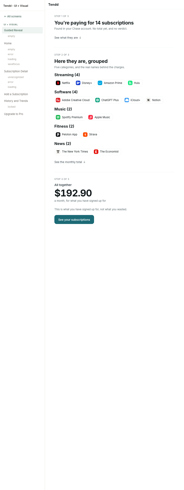
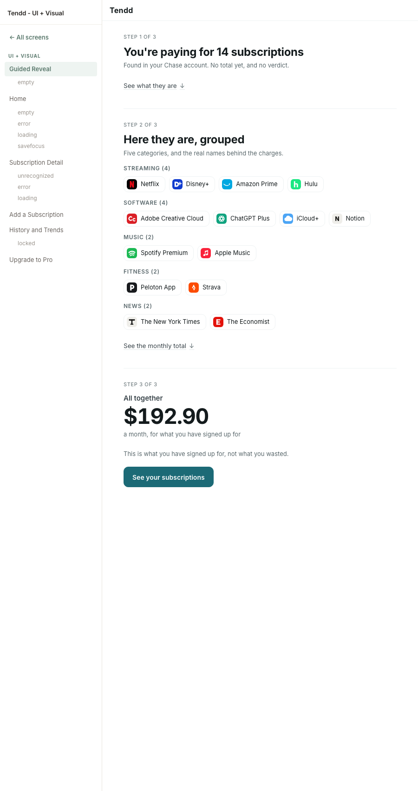
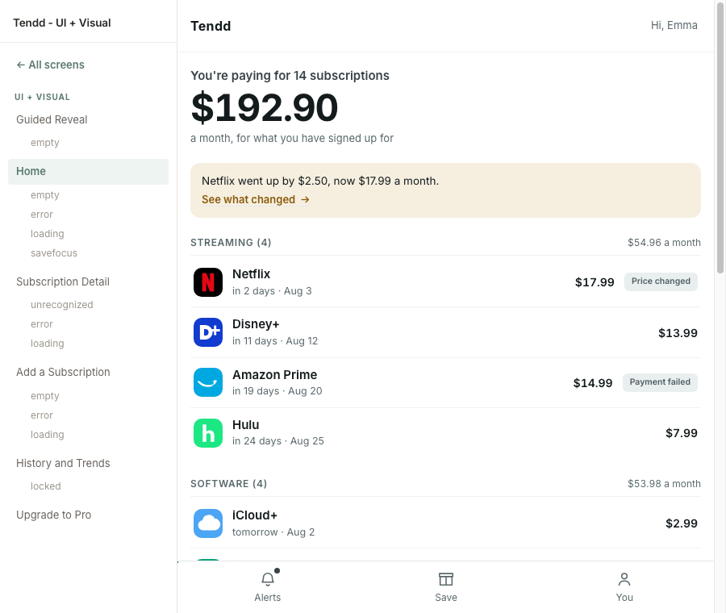
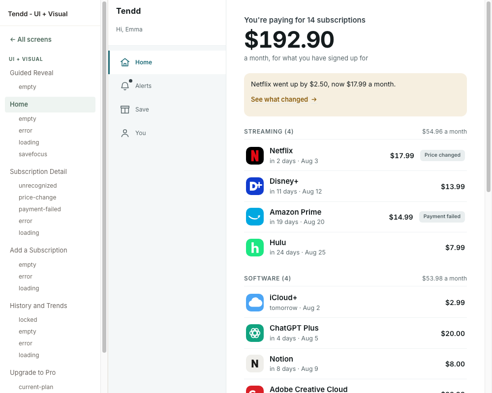
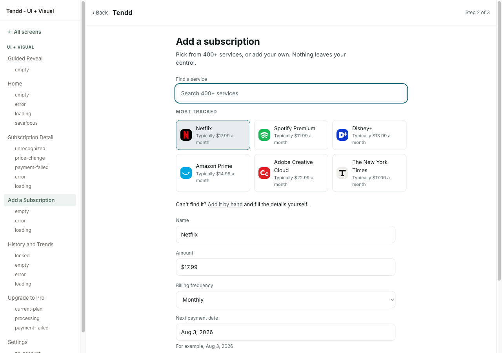
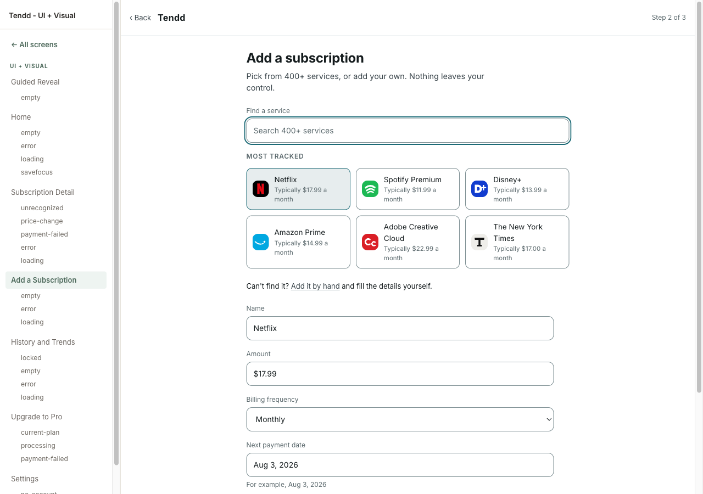
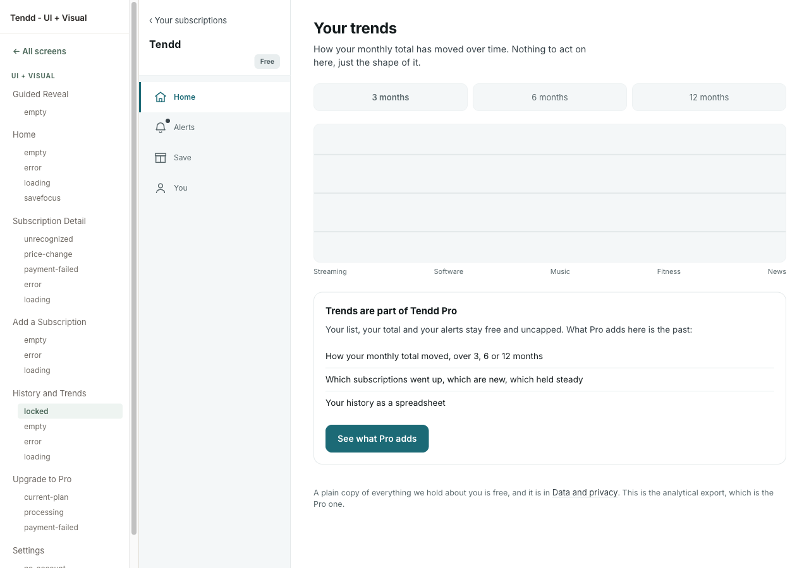
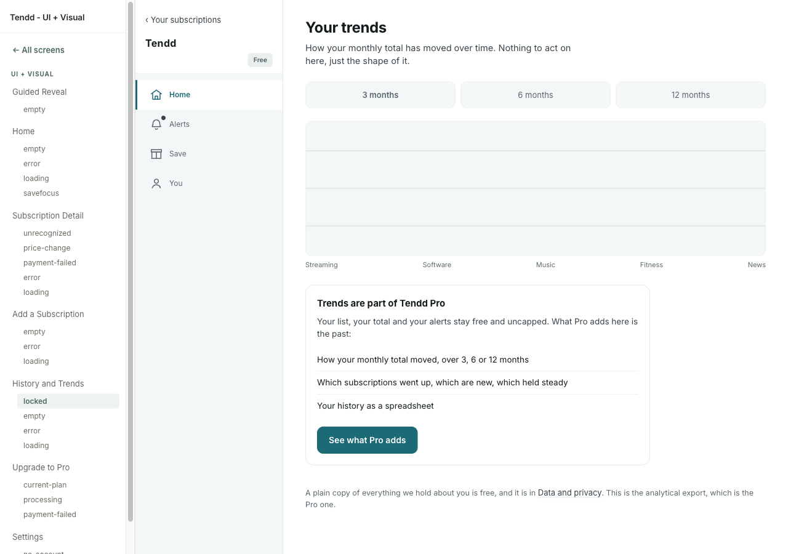
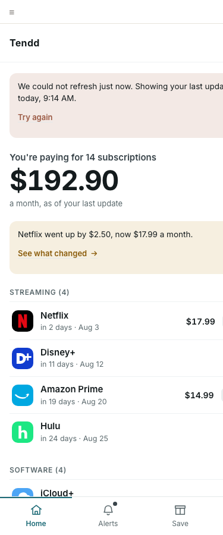

Home / Subscription ListColoured
Every Tendd screen in the Petrol and Paper language. What is coloured here is the sample, not the product: seven screens, five chosen because together they carry every level of the kit and the heaviest layouts, a sixth added at step 6 because the strategy check found the first five never showed the moment the whole product is a bet on, and a seventh, the account screen, added last as the saturation test. The rest stay grey on purpose and are coloured in one pass later, once the system has been proved on these. Open a screen to see its states.
Nothing on a coloured page carries a style of its own: every one is assembled from the design system, and a fix goes into the system rather than onto a screen.
These pages moved house on 2026-08-12, and the move was proved rather than announced. Each one used to load design/kit/kit.css, a single flat sheet; each one now loads design/system/index.css, which is two levels of tokens and a file per component, and kit.css is deleted. A refactor that promises "the look did not change" is worth nothing without an instrument, so all 28 pages were fingerprinted at 360 and 1280 before and after: 3588 elements, 30 computed properties each, paired by document order because every class name moved. The differences collapse to 83 shapes, and every one is explained by a row in one of the four named lists in design/kit/docs/tokens-audit.md. Zero unexplained. The stage was allowed to change the look three times, and 4074 of the moves are the two scales the founder adopted: 21 type sizes onto eight steps, 27 spacings onto an 8px grid, nearest step and ties to the larger, applied mechanically rather than value by value.
The product got a mark on 2026-08-12, and it is the first thing in this system that came from a decision rather than from the wireframes. The founder chose Crop out of thirteen live directions: one letterform drawn larger than any frame that will hold it, and a window cut out of it. Two atoms entered the system, the mark and the word, and the app bar gave up three paint properties it should never have had. The wordmark reversed its tracking with it, from 700 at +0.02em to 800 at -0.02em: the old value was right for a product with no mark in it, where the word carried the identity alone. Measured across the same 28 screens at both viewports: 3774 elements matched, 168 added, 0 dropped, 69 moved, and all 69 are the brand's own slot and the two plan chips whose auto margin absorbs its width. The repository also stops having no icon at all: the favicon and the touch icon are cut from the same geometry and reach 132 pages, every page outside the frozen grey.
The panel on every screen now carries a theme switch. The dark theme is not a feature decision, it is the proof that the semantic level is real: a rebrand would have worked on the flat sheet too, and only a theme inverts the ground while leaving the action an action. It was stress-tested across all 92 pages of the project in both themes, and not one file in design/system/ had to be edited for it.
Grey in wireframes
Grey in wireframes
Grey in wireframes
The manual path (D2), and the screen that brings the form primitives into the sample
The screen the riskiest assumption is tested on. It joined the sample at step 6, when the strategy check found the five chosen for component coverage had left H0 with no coloured screen
The eighth screen, and the first built after the sample closed. It is the self-sufficiency test of the design system at stage 09: assembled from the system with nothing added to it, and it carried the largest hole in the sample, the alert item, which no coloured page had ever rendered
Grey in wireframes
Grey in wireframes
Grey in wireframes
The paywall, and the one place the product asks for money
Grey in wireframes
Grey in wireframes
The account screen, and the saturation test. It was built after the sample was already closed and needed nothing new in the kit: every class it uses was read out of the wireframes at step 2, when the inventory was taken from the whole product rather than from the coloured sample
Node 1.6, added to the wireframes in round 3
Critique ran on three instruments and the audit on four, all in one pass over the sample. Every finding was re-read in the current file before anything was touched; what did not hold stayed in the log marked dropped at verification, with the reason. Closed, by class.
| Class | Found | Fixed | Dropped at verification | Carried, and why |
|---|---|---|---|---|
| Style past the kit | 0 | 0 | 0 | All 28 pages carry no page-level style block, no style attribute and no class the kit does not define. Checked mechanically, not by eye |
| A measure that stops holding at one width | 3 | 3 | 0 | Found by the seventh screen, on two the stage had already accepted. The three reading measures were written .app .form-col, which ties at 0-2-0 with a blanket reset in the 900 block and loses on source order. The form ran at 588 instead of 560, the Pro gate at 748 instead of 560, the settings column at 733 instead of 620. Bound through > .screen >; no value changed |
| Contextual override (an unnamed variant) | 4 | 4 | 0 | The worst was a second button hiding inside .secondary a, byte-identical to .btn.compact three lines under a comment saying it was not a second button |
| Duplicate under another name | 3 | 3 | 0 | .num was .k, .tone was .context, .rstep .lbl became the declared .lbl.strong |
| Orphan in the kit | 3 | 2 | 1 | .tone-info and --c-bg removed. Dropped: --success is a documented palette token (DESIGN.md calls it Moss) whose consumer is the cancel-win screen, still grey |
| One voice, one zone | 2 | 1 | 0 | Twelve petrol ticks on the paywall were decoration and went quiet. Carried: two filled petrol buttons 55px apart on the form screen, because the class comes from the frozen grey |
| Typography bound to a tag | 2 | 2 | 0 | The group head was written as h2.group-head and broke twice, at 24px browser default against 12px everywhere. Now matched to the class at any heading level |
| Target size | 14 | 13 | 0 | The 44px floor was on the wrong half. It deformed links inside sentences (a four-line paragraph measured 100px instead of 75) and was missing from thirteen that are not in sentences, including "Try again" and "Remove from your list". Carried: one paragraph whose only content is its link, which CSS cannot tell from a sentence |
| Breaks at 360 | 0 | 0 | 4 | Measured on all 28 pages at a true 360 (a default headless browser leaves a scrollbar and measures 345). Zero horizontal overflow, zero clipped or overlapping text, nothing escaping the stage. Dropped: four suspected overflows were the scrollbar |
| Text contrast | 0 | 0 | 0 | Every product text pair passes AA, the switch rows and the account promises included. The tightest is clay on its own wash at 4.57:1 |
| Non-text contrast | 7 | 7 | 0 | Carried to a decision, then decided. A control boundary was --line on white, 1.23:1 against the 3:1 WCAG 1.4.11 asks. The founder's call on 2026-08-11 was to scope the darker edge to controls only: --line-control #7b8d91 on the field, the select, the outline button, the preset tile, the door and the segment (3.46 on paper, 3.10 on canvas), while every card, panel and divider keeps the hairline. Two new values, no existing value moved. Raising --line itself was rejected: it satisfies any checker and outlines the whole product, and the language was chosen against exactly that |
| Motion without a guard | 1 | 1 | 0 | The reduced-motion guard lost the cascade by one class and did nothing: every skeleton pulsed forever for a person who had asked for no motion. It read as correct in the file |
| Decorative glyph in an accessible name | 5 | 5 | 0 | Arrows and ticks injected by content: were being read aloud. Twelve feature rows on the paywall each announced a tick first |
| Review chrome on top of the product | 3 | 3 | 0 | The Home destination was laid out underneath the review panel and showed a 4px sliver; the off-canvas panel kept sixteen links in the tab order on a phone; two chrome colours were under AA |
| Structural desync with the grey | 12 | 12 | 0 | Eleven page titles had been rewritten rather than suffixed. The body text of all 28 pages is character-identical to its grey original |
| Placeholder shipped into colour | 5 | 5 | 0 | [ ? ] and four [chart: ...] notes. This row read 3 and 3 until 2026-08-12 and it was wrong twice over: the count was 5, and stage 07 fixed 3 of them, leaving history-trends-loading and history-trends-empty rendering their bracketed strings into the coloured product for a month. Step 6 drew both, with the Pro gate's own markup and no new component: three gridlines, no path, the box unmoved to the hundredth of a pixel. A row that says 0 carried is the one nobody re-reads |
| Copy against microcopy.md | 13 | 14 | 0 | All thirteen were stage 05 misses, not copying errors: the visible text of every coloured page matches its grey original exactly, so the divergence was between the grey and the line inventory. Closed on 2026-08-11 as Round 4 of the voice rewrite log, which is the mechanism for exactly this: Voice reopens, the grey changes first, the coloured copies follow. Fourteen rather than thirteen, because the open-question leak turned out to be on the welcome landing too, and the landing is not in the coloured sample |
| ARIA and form semantics | 11 | 0 | 0 | Carried by rule. A coloured copy owns the visual layer only, and every one of these is markup: a fieldset with no legend, an aria-label on a paragraph that ARIA discards, section labels repeating their own heading, a form with no required or invalid state. Inventing an ARIA difference between grey and colour is the exact desync this stage tests for |
Where the fixes went: 31 into the kit, 0 onto a screen. That is the number this stage exists to produce, and it is the one worth reading twice. Every style correction landed in design/kit/kit.css and reached 28 pages by itself. That file no longer exists: step 6 of the next stage split it into design/system/ and deleted it, and the sentence is kept in the past tense because where a value came from is the thing this project is most careful about. The edits that did touch a page were not styles: eleven restored titles, one drawn mark, two drawn plots, and the links repointed at coloured screens as they appeared.
The account screen was built after the sample was closed, and it needed nothing new in the kit: not a class, not a value, not a plate in the showcase. That is the saturation signal the stage asks for, and it is only available because the inventory at step 2 was read from every grey page rather than from the screens that were going to be coloured. A kit sized to the sample would have met this screen with four missing components.
It did not arrive empty-handed, though. Assembling it surfaced a defect no page in the sample could show: a reading measure that holds at one width and quietly stops holding at the next. The form column, the Pro gate and the settings column were all declared at a fixed measure and all three lost it past a 900px container, on a rule written for a different screen's layout. Two of those screens had already been walked and accepted. A screen is accepted at every width or it is not accepted, and the width where a defect lives is not always the narrow one.
None of these was a colouring error. The visible text of all 28 coloured pages is character-identical to its grey original, so every row was a gap between the frozen grey and voice/docs/microcopy.md. That file ships at Handoff, and a product that has quietly diverged from its own line inventory diverges from it forever.
Closed on 2026-08-11, as Round 4 of the voice rewrite log. The mechanism matters as much as the fix: Voice is the stage that owns product copy, so it reopened, the grey changed first, and the coloured copies followed byte for byte. Colouring a line that the grey does not say is the desync this whole stage exists to prevent, and fixing thirteen of them in colour would have been that desync thirteen times. The count came back fourteen: the open-question leak was on the welcome landing as well as the paywall, and the landing is not in the coloured sample, so this pass never saw it. It was found by grepping the notation across all 55 grey pages instead of fixing only the one that was reported. Two of the fourteen were not screen edits at all: on the home-empty doors the screen was right and the inventory was wrong, and on the locked Pro gate the rule was narrowed rather than the screen changed. The full was-to-became is in the rewrite log.
| Where | What was wrong | Closed as |
|---|---|---|
| Upgrade | The paid screen prints the project's own open-question marker: "Not on sale yet. [? D4, the lifetime price, $99 to $139, is still being decided]". The line inventory carries the bracket verbatim, so the inventory blesses the leak | Rewritten on both screens: "Not on sale yet. We are still working out the price." |
| Upgrade | Four orphan strings never inventoried: "Everything in Tendd Pro", the monthly button, "one payment", and the lifetime sentence, which was rewritten when its "One payment," was demoted to a sub-label | Four orphan strings inventoried, one of them corrected to what ships |
| Upgrade | Every feature row lost its descriptive half. The inventory has "History and trends (3, 6 and 12 month views)"; the screen has "History and trends". The same list on the current-plan screen still carries the descriptions, so one list exists in two forms | feature-list-compact declared beside feature-list: one list, two named forms |
| Home, empty | Here the screen is right and the document is wrong. The inventory still carries a retired trust line containing "we can never move your money", the exact form Voice itself retired. Shipping microcopy.md today would ship a banned variant | The inventory fixed, not the screen. The banned variant is out of microcopy.md |
| Home, save focus | The same two subscriptions read "Trial ends: Aug 18" in the candidate list and "trial ends in 17 days, Aug 18" in the groups below, on one screen. Days first everywhere, date first here. Logged as an open Voice finding and never closed | Both candidate rows lead with the days; the date moved into the accessible name |
| Home, empty | Two headings a hundred pixels apart doing one job: "Nothing to add up yet" over "Nothing here yet". Also logged and never closed | The second heading became "Two ways to start" |
| Subscription Detail, error | One destination, two wordings on one screen: the chevron says "Your subscriptions", the button says "Back to your subscriptions". The documented exemption for this rested on the chevron saying "Home", which a later round changed | The button became "Your subscriptions", matching the chevron |
| History and Trends, locked | The full-screen Pro gate has no "Maybe later", which voice.md says is always present. The three inline gates all carry it. Either "always" is too strong for a locked screen, where the back chevron is the exit, or the line is missing | The rule narrowed, the screen unchanged. The chevron is the gate's exit; a second control to the same place is chrome |
| Add a Subscription | Six "Typically $X a month" strings against one inventoried. Renderings of one authored pattern, low severity | Inventoried as a pattern rather than as one of its six renderings |

h2 and here the head is an h3. The loudest thing on the calmest screen in the product was the word "Streaming".



--line at 1.23:1 on paper. On a good screen in a quiet room it reads as calm restraint. WCAG 1.4.11 asks 3:1 of the edge that identifies a control, and this is the edge that says a field is a field.
--line-control #7b8d91, at 3.46 on paper, and only on controls. The founder's call was the scope, not the number: raising --line itself would have satisfied any checker and outlined every card, panel and callout in the product, which is exactly what the language was chosen against.

> .screen > so a blanket reset written for another screen's layout cannot outrank it. No value moved: 560 was always the number, it had just stopped being applied past a 900px container.